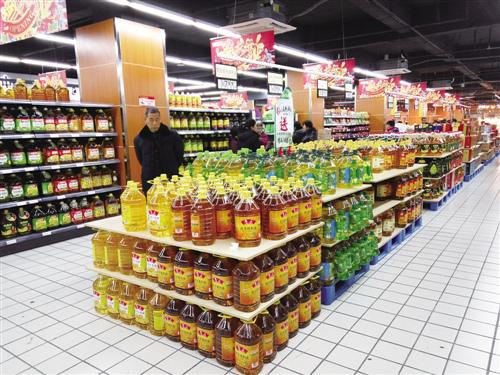
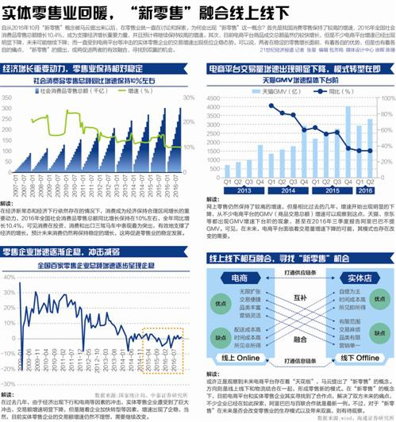

|

|
|

|
本报记者 温颖然 广州报道
探路“新零售”
经济进入新常态，消费成为经济增长的“压舱石”，2016年全国社会消费品零售总额同比增长10.4%，增速较快。这也显示出零售业仍然保持着较为稳定的增长态势，不过，在业态上发生一定的变化，网上零售继续保持中高速的增长，但是增速出现下降，电商平台商品成交额增速也体现出这点，另一面则是传统零售增长虽有回升企稳，但是仍然受到各方面的影响。阿里巴巴或许是预见到未来零售业模式存在变革的需要，故而提出了“新零售”概念，形成线上线下以及物流之间的融合。这个思路或许可以解决传统零售和电商平台的痛点，以取得共赢。在近几年，不少传统零售企业已经在试图通过线上线下互补来减少电商平台的冲击。阿里巴巴等电商平台也参与入股了一些实体零售企业，不过，阿里巴巴与百联集团的合作则是“新零售”概念提出后阿里巴巴的收单落地项目，其是否能够取得成功，有待观察。
在曹磊看来，国内网络零售行业都已显示出增速趋缓的态势，对于电商巨头而言，尤其是上市公司，迫切需要寻求挖掘新的增长点来刺激业绩、维持高股价与股东利益。在此背景下，采取“化敌为友”策略，从过去抢线下零售业的饭碗，到互补合作、开发共享无疑是国内电商无奈之下的明智选择。
线上线下相交融的新零售无疑是2016年零售行业的热门关键词之一，2月20日，百联集团与阿里巴巴集团在上海宣布达成战略合作，消息一出，关于新零售的讨论热度再次被推高。
事实上，早在阿里新零售战略发布的一周前，零售圈便开始因另一宗收购传闻而显得热闹非凡，而这一收购案的主人公正是包括阿里巴巴、苏宁、腾讯在内的企业以及大润发所在的母公司高鑫零售。
一方是国内三大巨头，而另一方则是极少数保持着实体零售高频开店记录的 “另类”，无论大润发牵手哪方，这样的 “联姻”传闻必然会吸睛无数，惹来业内对于合作形式的无限猜测。
然而，就在各方以为收购一事基本上是板上钉钉的事情之际，高鑫集团深夜发布的公告却推翻了众人的猜想。关于收购对象的说法，润泰集团总裁尹衍梁以及高鑫集团三方各执一词，而最新进展是高鑫集团首席执行官在2月20日举行的业绩发布会上明确表示“公司不会出售大润发”。
收购疑云
回顾过去一周，大润发并购传闻几乎隔天就有一种截然不同的说法。2月15日，大润发所在的母公司高鑫零售被传即将出售，阿里巴巴很有可能对其进行注资，此次合作与阿里巴巴董事局主席马云去年提出的新零售战略不谋而合。
2月16日，润泰集团总裁尹衍梁在接受台湾工商时报采访时表示，洽谈的不止阿里巴巴，还包括腾讯、苏宁在内的三大巨头，“高鑫旗下的中国大润发姑娘要出嫁，追求者有三家！”受收购消息影响，在港上市的高鑫零售股价2月16日上涨了1.74%，当日收盘价为8.17港元/股。
对于收购传闻，阿里巴巴集团的表态十分暧昧，在回应媒体询问时表示，“对于新零售，阿里巴巴毫无疑问在全力积极探索，至于市场传言我们暂不评论。”而剩下两位“追求者”同样并未做出明确回复：腾讯方面表示并未接触过大润发，而苏宁在接受记者采访时亦表示不回应市场传言。
剧情的再次反转发生在2月17日，当天午间高鑫宣布停牌，并表示“短暂停牌以待刊发内幕消息的公告”，当时业内一度认定收购事宜有了具体进展，种种迹象让市场充满想象空间。
令人大跌眼镜的是，2月17日深夜等来的却是高鑫集团发布的澄清公告：“公司目前与包括苏宁在内的若干第三方就潜在合作进行讨论，但并未就任何有关合作之架构或条款展开实质性讨论。”并且明确第三方不包括阿里巴巴或腾讯。
2月20日，阿里巴巴正式揭晓“联姻”谜底，在上海宣布和百联集团达成战略合作，双方将基于大数据和互联网技术，在全业态融合创新等六个领域展开全方位合作，且合作暂不涉及资本层面。
几乎同一时间，高鑫集团在香港公布2016年度业绩并澄清市场传闻，发布会上，首席执行官Bruno Mercier明确表示公司不会出售大润发，在被问到阿里收购传闻时更直言“没什么好说的，你们去看公告”。
当天，高鑫零售宣布复牌，开盘后股价大跌8%，跌幅一度超过15%，创2015年以来最大跌幅。至此，大润发未来会否继续出售的疑团依然未解。
大卖场中的“异类”
公开资料显示，大润发卖场由润泰集团于1996年创办，1997年进军中国内地市场。2000年底，润泰集团引入了欧尚进行股权投资，双方交叉持股，并在此后合资成立了高鑫零售有限公司。
与家乐福、沃尔玛等重点发展一线城市不同，从其门店选址分布来看，大润发走的是“农村包围城市”的路子，把卖场集中开在华东区、华北区、华南区等区域的二三线城市。
业内人士告诉记者，不同于沃尔玛、家乐福等外资卖场，大润发所处的地段租金是业内最低，租期最长，并且租金随着销售额的变化而改变，这一发展模式让大润发摆脱了租金成本的困扰。
在实体超商关店声不绝的零售寒冬中，一直保持高速开店的大润发无疑属于“另类”。进入内地接近19年以来，大润发几乎从未有过关店记录，而这个记录直至去年10月才被打破——由于物业纠纷原因，山东潍坊店被迫撤离购物广场。
从高鑫零售公布的2016年财报业绩来看，其过去一年的业绩增长依旧强势。截至2016年12月31日，公司营业额为1004.41亿元，较2015年同期的964.14亿元同比增长4.2%；净利润则同比增长5.2%至25.71亿元。
与此同时，该集团新开38家综合大卖场，截至2016年12月底，高鑫零售在全国共有446家综合性大卖场。而根据市场调研机构凯度发布的数据显示，高鑫零售2016年在中国零售市场的份额为7.8%，紧随其后的分别是华润万家、沃尔玛和家乐福。
大润发显然不想止步于线下门店所获得的成就。2013年6月，大润发集团旗下的自营电商平台飞牛网正式上线，2014年华东上线，2015年先后在山东、北京上线。而从飞牛网最新公布的业绩看来，其飞牛网2016年的商品交易总额为21亿元人民币，仍处于亏损状态。
零售管理专家、上海尚益咨询总经理胡春才告诉记者，外资零售巨头从上世纪90年代以来先后进入中国市场，经过20年左右的发展，租金成本比过去翻了好几倍不止。随着租期陆续到期，租金压力也随之而来，这意味着即使卖场销售额保持增长，其毛利也会大幅度减少。
而到了2010年以后，大卖场更是直面来自电子商务的冲击，消费客群不断流失。
“在过去大卖场盈利点比较集中在数码家电、生鲜蔬果等商品品类，几乎无一不受到电商的打击。加之租金的上涨，小业态门店如社区超市以及线上业务便成为了传统零售商的转型出路。”胡春才分析道。
新零售猜想
事实上，线下零售商要转战线上，途径无非有二：一是自建电商，二则是与原有的第三方平台合作。前者有沃尔玛战略入股京东的经典案例，后者则有华润集团于去年底推出综合电商平台“华润通”。
关于两种截然不同的做法，中国电子商务研究中心主任曹磊认为，传统零售商想要自立为王，打造专属的电商平台，实际上还是一种自我封闭式的发展模式。他表示，由于引流成本和运营成本都非常高，目前市场留给实体零售商自建电商品牌的空间越来越少。
“传统零售引流到线上，想要自立山头的可能性不大，基本只有死路一条。银泰涉足电商的成效不大，后来又卖给了阿里就是个很好的先例。”曹磊说道。
实际上，随着零售商业的不断磨合发展，近两年线上线下不再变得水火不容，界限也愈发模糊。
在曹磊看来，国内网络零售行业都已显示出增速趋缓的态势，对于电商巨头而言，尤其是上市公司，迫切需要寻求挖掘新的增长点来刺激业绩、维持高股价与股东利益。在此背景下，采取“化敌为友”策略，从过去抢线下零售业的饭碗，到互补合作、开发共享无疑是国内电商无奈之下的明智选择。
无独有偶，胡春才在接受记者采访时同样表示，电商行业的“马太效应”已经显现，即强者更强、弱者更弱，而缺乏体验性成为制约其进一步发展的瓶颈。因此，大润发未来牵手第三方平台的可能性依旧很大。
（编辑：张星）